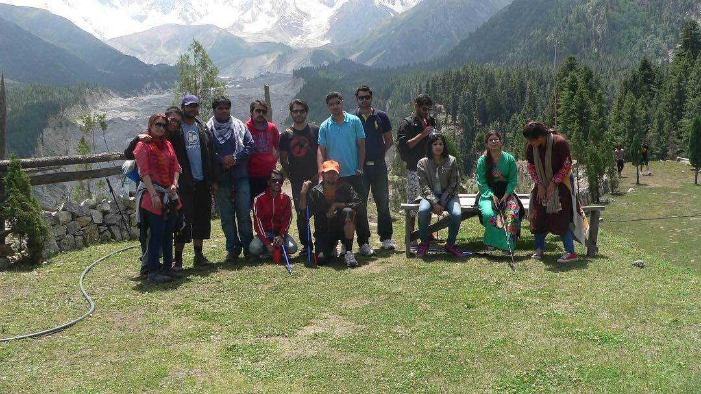
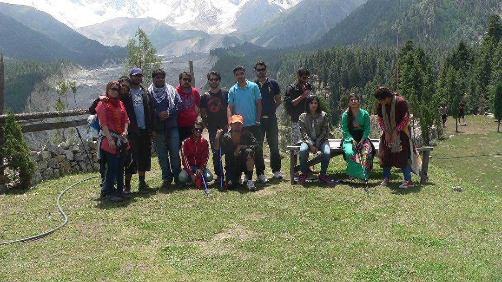

How it all Started
It was a hot summer day in God-forsaken place of Shorkot. I had to spent my first ever Eid festivity away from
family and friends, ofc for the greater cause of defending aerial boundaries 😜
The feeling of being deprived of basic festivity triggered something inside and i just wanted to burst the
comfort zone and do something worthwhile during the post-eid vacations. It was an initiative thats turned my
life upside down and my life has been about traveling ever since that day.
My First Trip
My first trip was to the Fairy meadows situated in the Gilgit Baltistan region of Pakistan. I had to travel
with a bunch of complete strangers in a travel group and it was such a life changing experience. I was able to
meet a lot of people from different cultures and made a lot of friends during the journey as well. I was able to
see the beautiful scenery and the beautiful people that live there, who had just bare minimum resources to
survive but still they were happy and enjoying their lives, which is just a proof that happiness isnt associated
with all the materislistic things that we do in our lives.
Coming back to the amazing scenery of Fairy meadows. That place is surely a piece of heaven, with lush green
meadows and a beautiful view of the Nanga Parbat in the Background. We use to just sit there at night and get
lost in the mighty beauty of Nanga Parbat. I will add some of the photos of that amazing place below.
 "
"
"
"